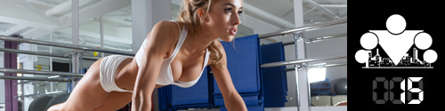

The second week of our educational program is behind us. We answered the most frequently asked questions about the training part of the program, talked about correct technique and breathing, explained what to take into account when training in winter and summer, and even showed how to learn pull-ups from scratch. Now it's time to get into proper nutrition.
Calorie balance
First of all we want to tell you about the so-called "calorie balance" concept, without which all attempts to get in shape will look more like dancing around a fire with a tambourine than a planned move toward a goal. Simply put, all the food we eat through the day has a certain energy value, measured in calories. These calories are spent on keeping you alive and stored in the body for later. And it's the ratio between calories in and calories out that determines the dynamics of weight — whether it will drop, rise, or stay put.
Where did calories come from?
In the scientific community the term "calorie" (from Latin "calor" — heat) appeared in 1824 thanks to the work of the French chemist Nicolas Clément-Desormes, who defined it as the amount of heat needed to raise 1 gram of water by 1 degree Celsius.
Thank eternity that Nicolas was French, not American!
Thank eternity that Nicolas was French, not American!
What do we spend calories on?
In a nutshell, calorie spend can be split into two groups: keeping the body alive, and everything else. In the first case we're talking about a huge number of various processes that happen in our body (in organs, tissues, cells) that we don't think about, but that require energy. The simplest examples are the work of the respiratory and cardiovascular systems. All these processes must happen in the body (there's no getting around it), and the number of calories spent on all these processes is called the basal metabolic rate.
What is metabolism?
Metabolism is the set of processes that happen in a living organism to keep it alive. The processes can be split into two groups: building (anabolism) and breaking down (catabolism).
Accordingly, basal rate means the number of calories the body needs to live in complete rest — that is, with no activity and even without spend on heating the body, because the environment is made the same temperature. For example, at rest the muscles still actively consume energy. So a muscular person, even when not moving, spends more calories than a person of the same weight but with less muscle. Don't forget the nervous system either — although the brain is only 1–2% of total body mass, it can consume up to 25% of all energy that entered the body. Of course you can't calculate the basal rate exactly, and even in lab experiments it has error, so why everyone on the internet fuss about it so much is completely unclear to us.
Accordingly, basal rate means the number of calories the body needs to live in complete rest — that is, with no activity and even without spend on heating the body, because the environment is made the same temperature. For example, at rest the muscles still actively consume energy. So a muscular person, even when not moving, spends more calories than a person of the same weight but with less muscle. Don't forget the nervous system either — although the brain is only 1–2% of total body mass, it can consume up to 25% of all energy that entered the body. Of course you can't calculate the basal rate exactly, and even in lab experiments it has error, so why everyone on the internet fuss about it so much is completely unclear to us.
Now let's talk about what else the calories that entered our body are spent on:
1. On the work of skeletal muscles. The modern world is set up so that we don't have the chance to stay at rest for long, and we have to move actively. And in this case, too, a person with more muscle will spend more energy!
2. On digestion. There's a widely spread myth on the internet that eating many small meals speeds up metabolism because energy is spent digesting each meal. The problem is that the differences here will be minimal, and physics tells us that. To digest 1 kilogram of food you need a certain amount of energy, and it doesn't matter how many parts you split that kilogram into. On the other hand, if you eat such a large portion at once, it may even take more energy, because for the body that volume will be extra stress it has to deal with.
3. Everything else. This group has a lot of various things tied to maintaining homeostasis. For example, if you get cold, the body will start spending calories on heating, and if you overheat, it will start the cooling process. Which also needs calories. You can invent a mass of similar examples, and although the single contribution of each item may be small, together it's enough that we should take these spends into account when counting.
We hope you now have some understanding of where all the energy you get with food goes, and why some people can eat more than others and still not get fat. Of course genetics and the hormonal system also play a certain role here, but we'll talk about them later in the program.
Determining calorie balance
Most of us already have established eating patterns tied to how our day is organized and to our habits. For most people their weight is a plus/minus constant. That's because we consume about the same number of calories a day as we spend. This is where it gets interesting. If you want to lose weight, you need to reduce the number of calories you consume (by about 10–15%); if you want to gain mass, you need to increase that number (also by about 10–15%). The efficiency of the GI tract (gastrointestinal tract) and how well it absorbs food will also play a certain role here, but we'll leave that for the ADVANCED block.
After reading the previous paragraph a question should come up: "And how do I determine my calorie balance?" On the internet you can find a lot of various calculators and complex formulas for determining how many calories you need to consume at a certain age and with a certain lifestyle. The result is some averaged number whose origin is fairly mysterious. There's a much simpler and more accurate way. If we agree that the daily diet is a roughly constant value (and within a week/month that's true for most people), you can count its calorie content. On the other hand, on the internet you can find a huge number of different formulas for counting how many calories you burn through the day depending on lifestyle, your weight, activity, and so on. But those formulas will also be averaged and VERY inaccurate. And yet there's a simple, clear, convenient equation:
Weight change = Calories in − Calories out (counted over a period of time)
That's it! You don't need to invent ANYTHING else. Want to lose weight? Reduce Calories in. Want to gain weight? Increase them. It may seem that according to this formula you could also lose weight by increasing Calories out. You can, but there's one problem. Right now SOTKA burns about 100–150 kcal for an average participant weighing 80 kg, and by the end of the program it will burn up to 500 kcal. 100 kcal is eaten back by one or two apples. 500 kcal is a small piece of cake. So you can eat the training effect away without even thinking.

Calorie content
Back to the main topic. Calorie content lets you bring the complex composition of our food to a common denominator. So 1 gram of protein or carbs gives 4 kilocalories, and 1 gram of fat gives 9 kilocalories. So all you need to do to determine your calorie balance is simply recount the calorie content of all the foods you eat through the day.
IMPORTANT!
The calorie content of a product is always counted in dry/raw/uncooked form! Even though during cooking grains soak up water, and a piece of meat, for example, gives water off, in most cases the ratio of proteins, fats, and carbs stays the same. That is, 50 grams of dry rice give the same PFC as 200 grams of cooked rice.
Data on the calorie content of various products is easy to find in open sources, and if you're too lazy to sit with a calculator and figure it all out yourself, there are a lot of sites on the internet that provide that service. There are many mobile apps you can use to conveniently track the number of calories you consume! But nothing more convenient and practical than a good old Excel spreadsheet can be invented in this case.
Food diary

After what you've read, two main points should stick in your head: first — food gives calories that can be counted; second — to lower/increase weight, you need to break calorie balance in one direction or the other. I know that counting calories is not the most exciting thing in the world, but it's necessary if you really set yourself the goal of changing yourself. There's a saying: "You can't manage what you can't measure", and for our situation it fits perfectly!
You often hear from people (even on our forum such topics come up often) things like "I eat like a wolf and still can't gain mass", or "I don't eat anything after six and the weight still doesn't go". We can guarantee that if you don't keep counts, your rough estimates can actually be very far from reality, and that's exactly why you can't reach the goal you want!
So for the next week we walk around and write down everything we eat through the day, analyze, determine calorie balance, and draw conclusions. Want to lose weight — reduce the number of calories you consume; want to gain weight — increase them.
On our site you can create a diary for going through the program, and if the goal is to lose weight or gain mass, we strongly recommend that along with daily reports on the workouts you also record the amount of Proteins, Fats, and Carbs eaten and the total number of calories received for the day.
One last thing
Since calorie balance is the total number of calories consumed per day, it doesn't matter that much how many meals you have a day. The main job is to get the needed number of calories and to watch that their ratio is roughly this: Fats 15–30%, Proteins 10–15%, Carbs 55–75%. That's not dogma, just a norm recommended by many organizations in health and nutrition (including WHO), giving an approximate ratio you can start from. Then, depending on your goals, you can change the ratio of proteins, fats, and carbs you consume.
Besides that, you need to watch that your nutrition is as varied as possible and includes various sources of proteins, fats, and carbs, as well as fiber, vitamins, and minerals. It's worth remembering that your body has certain limits on how much protein, how many carbs, and how much fat it can process in one meal for its benefit (we already mentioned GI tract efficiency). So it's better to split all the calories evenly across several meals.
Sources
1. A very useful LiveJournal on various nutrition questions, with long infoposts and links to studies.
2. Diet, Nutrition and the Prevention of Chronic Diseases (WHO).
3. Biology: grade 8, textbook for students of general-education organizations, Dragomilov A.G., Mash R.D., Moscow, Ventana-Graf, 2014.